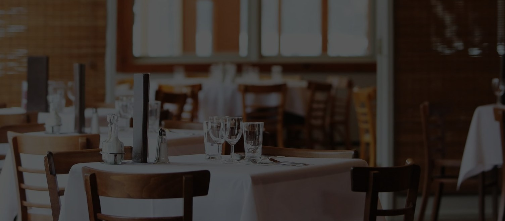
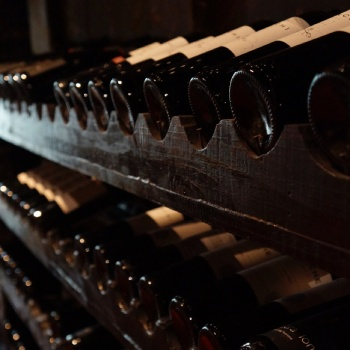
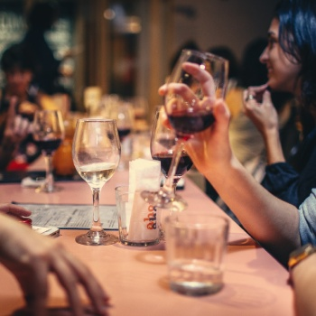

Trattoria Romantico
Boka bordMiddag enligt oss

Maten
Varje dag bakar våra kockar ny pasta så att våra gäster ska få äta dagsfärsk pasta. Förutom färsk pasta har vi grillade rätter och napolitansk pizza. All mat lagad med kärlek.

Vinet
Vi erbjuder en vinlista som är utvalda för att passa våra rätter. Det är ett brett utbud med italienska viner.

Atmosfären
Hos oss äter du i en lugn, romantisk och familjär miljö. Vi anser att atmosfären är lika viktig som maten. Hos oss kommer du trivas!